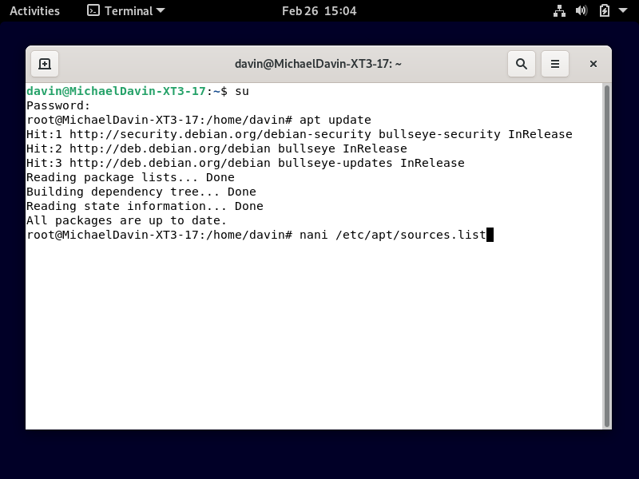
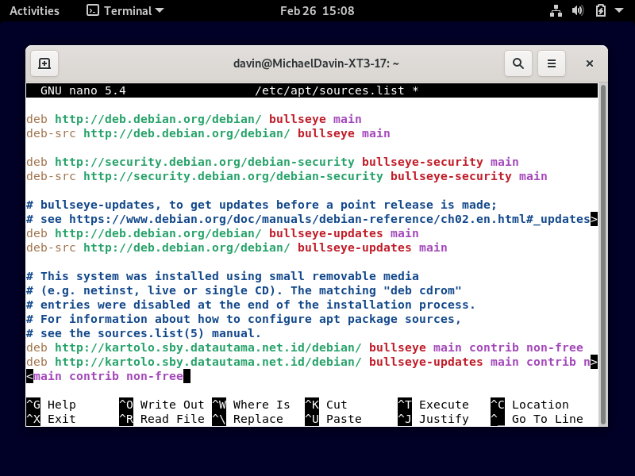
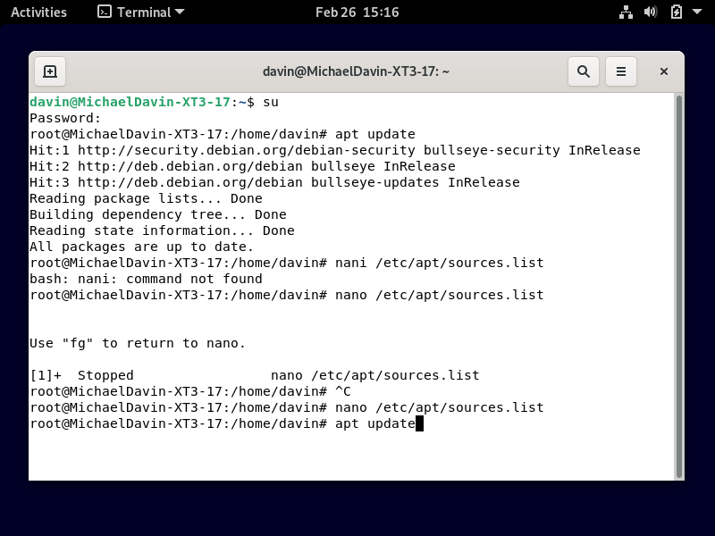

Langkah 1

Penjelasan : ketikan apt update
Langkah 2

Penjelasan : ketikan nano /etc/apt/source.list
Langkah 3

Penjelasan : deb http://kartolo.sby.datautama.net.id/debian/ stretch main contrib non-free
Langkah 4

Penjelasan : ketikan apt update